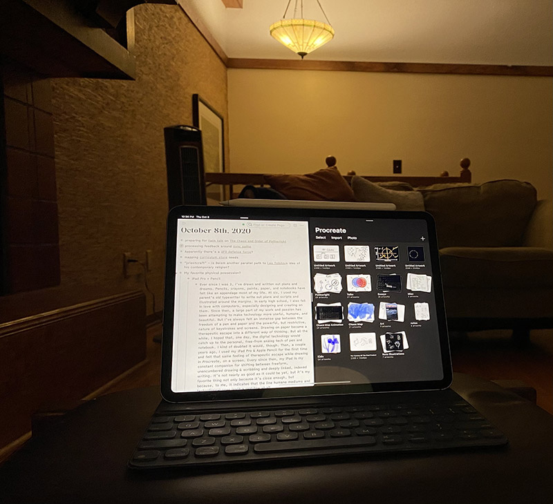

Paul's iPad
Published 2020-10-04

“Ever since I was 3, I’ve drawn and written out plans and dreams. Pencils, crayons, paints, paper, and notebooks have felt like an appendage most of my life. At six, I used my parent’s old typewriter to write out plans and scripts and illustrated around the margins. I also fell in love with computers in early high school, especially designing and creating with them. Since then, a large part of my work and passion has been attempting to make technology more useful, humane, and beautiful. But, I’ve always felt that there’s an immense gap between the freedom of a pen and paper and the powerful, but restrictive, nature of keystrokes and screens. Drawing on paper became a therapeutic escape into a different way of thinking. But all the while, I hoped that one day, the digital technology would catch up to the personal, free-from analog tech of pen and notebook. I doubted it would, though. A couple of years ago, I used my iPad Pro & Apple Pencil for the first time and felt that same therapeutic escape feeling while drawing in Procreate on a screen. Ever since then, my iPad is my constant companion for shifting between freeform, unencumbered drawing & scribbling and deeply linked, indexed writing. It’s not nearly as good as it could be yet, but it’s my favorite thing not only because it’s close enough, but also because it’s the first time I felt that the line between technical and humane mediums isn’t a real line at all.”
– Paul
top